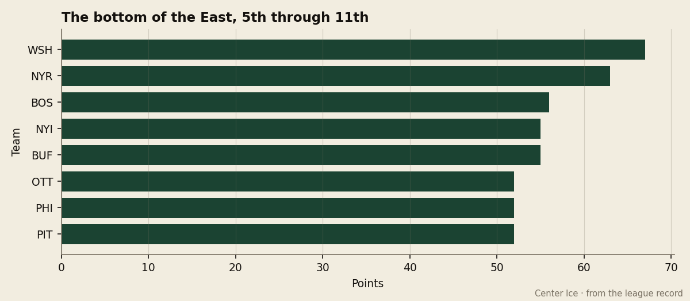
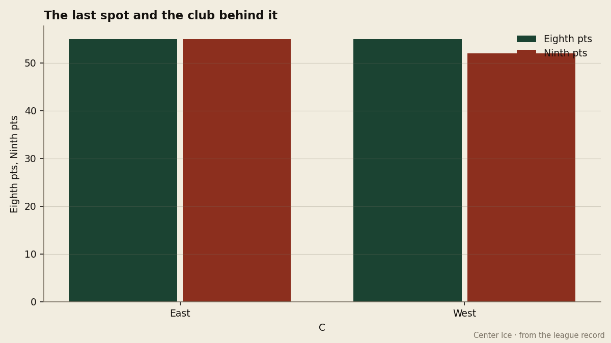

NJ
NJThe Bubble Watch: Buffalo and the Islanders are level at 55, and the Sabres have a game in hand
Four points separate 7th from 12th in the East, six clubs are inside that span, and the two teams closest to the line play each other on Monday
 Howard BlaineSenior writer, The Blaine Rankings · The Hockey Gazette
Howard BlaineSenior writer, The Blaine Rankings · The Hockey Gazette
The piece
The  NJI and the
NJI and the  Buffalo Sabres both have 55 points. The Sabres have played 51 games; the Islanders, 52. That single unplayed game is the difference between a club that sits on the outside of the Eastern playoff picture and one that has already done the work to climb past it. On Monday at the Nassau Coliseum, they play each other.
Buffalo Sabres both have 55 points. The Sabres have played 51 games; the Islanders, 52. That single unplayed game is the difference between a club that sits on the outside of the Eastern playoff picture and one that has already done the work to climb past it. On Monday at the Nassau Coliseum, they play each other.

The arithmetic of the Eastern conference below 6th place is the tightest contest in this league.  Boston Bruins holds 7th at 56 points. NJI and Buffalo Sabres are level at 55. Three clubs sit behind them at 52:
Boston Bruins holds 7th at 56 points. NJI and Buffalo Sabres are level at 55. Three clubs sit behind them at 52:  Ottawa Senators,
Ottawa Senators,  Philadelphia Flyers and
Philadelphia Flyers and  Pittsburgh Penguins. That is four points separating six teams with between 26 and 31 games remaining. In the West, by comparison,
Pittsburgh Penguins. That is four points separating six teams with between 26 and 31 games remaining. In the West, by comparison,  Columbus Blue Jackets holds the 8th spot at 55 and the 9th club,
Columbus Blue Jackets holds the 8th spot at 55 and the 9th club,  Los Angeles Kings, is 3 clear behind it.
Los Angeles Kings, is 3 clear behind it.

A win on Monday pushes Buffalo Sabres to 57 and past both NJI and Boston Bruins without the Bruins or the Islanders having to lose. The Sabres enter that game on a two-game winning streak, the best current form among the six clubs in this span. The Islanders have lost three straight. The Bruins have lost two.
Buffalo Sabres carries structural problems the streak cannot hide. The Sabres are 13 and 12 at home, 12 and 14 on the road, and they have been outscored 202 to 179, a minus-23 differential that would rank last in this six-team group and fifth-worst in the entire conference.  Martin Biron86 has a 3.72 goals-against average and a .834 save percentage, numbers that place him 27th among 30 goaltenders who have appeared in five games or more. His overall grade in the Bureau's Book is 88, which is 3 points above Biron the man has actually performed at on the ice this season. His two principal forwards are both young and both thin:
Martin Biron86 has a 3.72 goals-against average and a .834 save percentage, numbers that place him 27th among 30 goaltenders who have appeared in five games or more. His overall grade in the Bureau's Book is 88, which is 3 points above Biron the man has actually performed at on the ice this season. His two principal forwards are both young and both thin:  Tim Connolly80, 23, has 29 points in 51 games;
Tim Connolly80, 23, has 29 points in 51 games;  Taylor Pyatt76, also 23, has five points in 38 games at 10.7 minutes a night.
Taylor Pyatt76, also 23, has five points in 38 games at 10.7 minutes a night.
The Islanders have the goaltending the Sabres do not.  Rick DiPietro86, 23 years old and the first pick of the 2000 draft, has a 2.94 goals-against average and a .873 save percentage across 39 starts. His overall grade is 84, his form reading is +4 on the Bureau's Development Index, and his potential is 99, the highest number the Book has printed for any player in this league. DiPietro has been good enough to offset an offense that produces 169 goals in 52 games, the second-fewest in this group. NJI ranks 14th of 15 clubs in goals scored.
Rick DiPietro86, 23 years old and the first pick of the 2000 draft, has a 2.94 goals-against average and a .873 save percentage across 39 starts. His overall grade is 84, his form reading is +4 on the Bureau's Development Index, and his potential is 99, the highest number the Book has printed for any player in this league. DiPietro has been good enough to offset an offense that produces 169 goals in 52 games, the second-fewest in this group. NJI ranks 14th of 15 clubs in goals scored.
The two clubs at 52 are not out of this. Ottawa Senators has  Daniel Alfredsson89 with 77 points at age 32 and
Daniel Alfredsson89 with 77 points at age 32 and  Martin Havlat88, 23, with 71. Their divisional record is 6 wins, 2 overtime wins, 4 losses and 2 overtime losses in 14 games, a competitive profile that the overall 19 and 25 record obscures because they are 10 and 20 on the road.
Martin Havlat88, 23, with 71. Their divisional record is 6 wins, 2 overtime wins, 4 losses and 2 overtime losses in 14 games, a competitive profile that the overall 19 and 25 record obscures because they are 10 and 20 on the road.  Patrick Lalime88 has a 3.27 goals-against average but a grade of 88, and the Ottawa payroll is $42.80M, the 23rd in the league. They have $61.22M in revenue and $25.49M in profit. The economics work. The wins do not.
Patrick Lalime88 has a 3.27 goals-against average but a grade of 88, and the Ottawa payroll is $42.80M, the 23rd in the league. They have $61.22M in revenue and $25.49M in profit. The economics work. The wins do not.
Philadelphia Flyers at 52 points, $69.34M in salary, and a $1.33M cost per point, the worst rate in this league, has a separate problem this desk examines elsewhere today. Pittsburgh Penguins is 16 and 24 with a plus-4 in its last 10 games (26 goals for, 22 against) and sits on the tail end of a four-game winning streak interrupted by two losses that brought it back to 52.  Johan Hedberg85 has won 19, lost 22, and carries a 3.33 goals-against average at a grade of 82.
Johan Hedberg85 has won 19, lost 22, and carries a 3.33 goals-against average at a grade of 82.
The Bruins sit one point above the Islanders with the worst goaltender grade in hockey.  Andrew Raycroft80 has a 77 overall in the Book, the lowest figure attached to any qualifying goaltender across both conferences. His 3.25 goals-against average and .860 save percentage are middling numbers attached to a team that has been outscored 185 to 177, one of the worse differentials among the six. Raycroft has 22 wins and zero shutouts. Boston is 11 and 17 at home, which is the second-worst home record in the Eastern conference among all 15 clubs.
Andrew Raycroft80 has a 77 overall in the Book, the lowest figure attached to any qualifying goaltender across both conferences. His 3.25 goals-against average and .860 save percentage are middling numbers attached to a team that has been outscored 185 to 177, one of the worse differentials among the six. Raycroft has 22 wins and zero shutouts. Boston is 11 and 17 at home, which is the second-worst home record in the Eastern conference among all 15 clubs.
What the head-to-head shows
Among the divisional records that decide these standings, the relevant numbers are these. Buffalo Sabres is 4 and 1 and 7 and 3 in the Northeast, with a 52-73 goal differential across 15 games. NJI is 4 and 1 and 6 and 2 in the Atlantic, 38 goals for and 45 against in 13. Both teams are underwater in their own divisions, which means neither has a reliable source of points outside them.
The Monday meeting is not the last one. The season series between Buffalo Sabres and NJI has not met twice yet and will not meet again after February 8 within the divisional schedule, so it is a single game that could swing the standings by two full points between the two clubs most directly competing for the same slot.
Four points, six teams, one game in hand, and 28 games left on the calendar for Buffalo Sabres and 26 for NJI. The standings at Christmas were supposed to be the standings in April. In this division, they are about to be rewritten on a Monday night at the Coliseum.